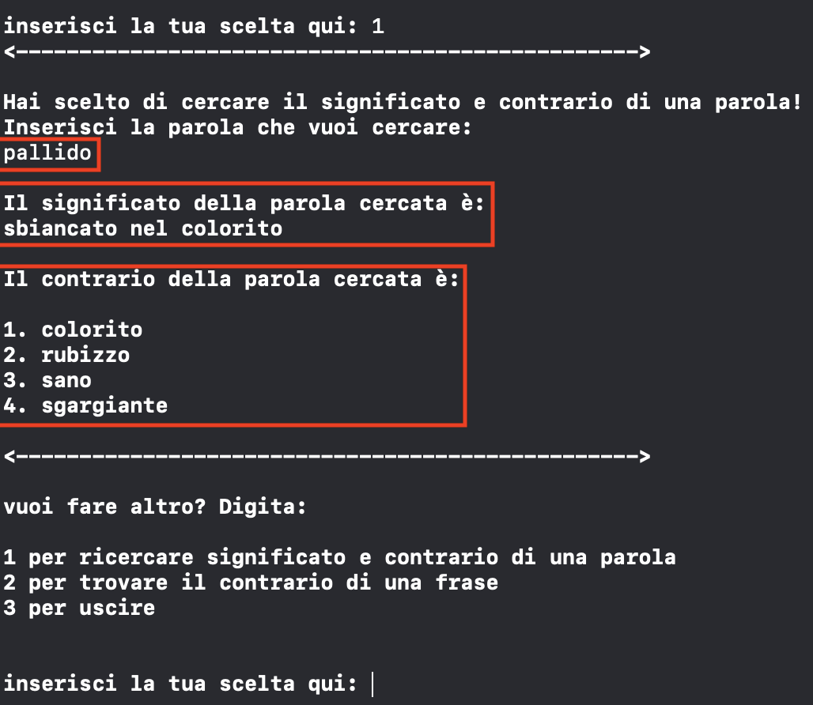

indietro
Il programma in questione, scritto in linguaggio C, ha lo scopo di simulare l'utilizzo di un dizionario dei contrari virtuale, dove l'utente ha la possibilita' non solo di cercare
una parola e mostrarne significato e contrari ma anche di dare in input una frase qualsiasi e di cercare il suo esatto contrario. La lista di parole disponibili per
il dizionario virtuale e' presente nel file dictionarylib.h (vedere codice sorgente). Inoltre la struttura dati delle parole e' stata inizializzata come un array bidimensionale in modo da non scorrere
tutto l'array (nel caso in cui fosse stato monodimensionale). Quindi di seguito le sezioni di test rese cliccabili per agevolare la navigazione nella pagina:
- Ricerca Parola: test 1 test 2 test 3
- Opposto di una frase: test 1 test 2 test 3
Ricerca parola - test 1
Test che dimostra i risultati della ricerca della parola pacifico, mostrandone significato e contrari.
Ricerca parola - test 2
Test che dimostra i risultati della ricerca della parola vanitoso, mostrandone significato e contrari.
Ricerca parola - test 3
Test che dimostra i risultati della ricerca della parola pallido, mostrandone significato e contrari.

Opposto di una frase - test 1
Test che dimostra il contrario della frase : E' un uomo pacifico ed e' paldino della giustizia. E' una persona leale
Opposto di una frase - test 2
Test che dimostra il contrario della frase : E' ufficiale : sei vanitoso e sadico
Opposto di una frase - test 3
Test che dimostra il contrario della frase : Hai il viso pallido : è necessario andare dal medico
Fine test